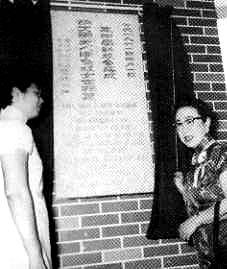
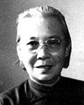
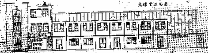

Introduction to SMJK Phor Tay Pulau Pinang
SMJK Phor Tay started as a free school in 1940 by a group of Buddhist monks and nuns. In 1946, Phor Tay Primary School was established after obtaining permit from the Ministry of Education then. This was followed by the establishment of Phor Tay High School in 1954. In 1962, the Board of Directors accepted financial subsidy from the government when Phor Tay High School was branched into two: Phor Tay Private High School and SMJK Phor Tay. Both the primary school and high schools are still operating.
At present, SMJK Phor Tay is the only Buddhist high school in Malaysia, and the only SMJK in the South West County of Penang. Since its establishment, SMJK Phor Tay had been sharing with Phor Tay Private High School the premises housed in an area of 1.76 acres at Bagan Jermal, North East County of Penang. At its peak operation, SMJK Phor Tay held 32 classes of 1030 girl students with 75 teaching staff in 2008.
There are 7 Chinese primary schools, but no Chinese high school, in the South West County of Penang. To meet the needs of the residents, the Board of Directors decided to shift SMJK Phor Tay to that region. Permission was granted by the Malaysian Ministry of Education and the building was in full swing in 2007. With the funds raised from various sources, the first phase of the building was completed and SMJK Phor Tay was shifted to its new location in 2009. At present, the school is celebrating its 75th Anniversary. A new Sport Centre was built in 2015.
There are around 2700 students (both boys and girls) each year, studying from form Remove to form five, in 43 morning classes and 43 afternoon classes. The teaching staff runs at 170.
In recent years, the school sees the importance of internationalization and has been reaching out for sister schools in the Asia Pacific region. At present the school has a sister school Shishi High School (West) in Chengdu, Sichuan, China, and Po Kok Secondary School in Hong Kong. The teachers and students of the school have been actively participating in international events and international exchanges.
The school provides a total of 65 co-curricular activities for the large population of its students. In these activities, the students have the opportunity of acquiring skills which cannot be learned in classrooms but urgently needed when they face future global challenges later. The myriad of activities include 15 uniform bodies, 26 clubs/societies, 17 service groups and 7 sports clubs. Students’ achievements in these activities are marvelous, producing many medalists throughout the years.
About Our School History
  Video of the history
The existence of Phor Tay High School that is known today originated from the effort of a Buddhist nun called Ven. Fung Lian. She came from the province of Xie Men in China to propogate Buddhism in Penang. Together with her followers, they set up the Phor Tay Institution to propagate Dahrma and train local Dharma preachers.
The school was opened after the war and preparation was made to set up Phor Tay Primary School
Mr. Aw Boon Haw donated the money for the construction of Phor Tay Institution that includes a shrine, a meditatian centre and Phor Tay Primary School.
Phor Tay Primary School moved into its present building.
The primary school building was officiated by Mr. Aw Boon Haw (a philanthropist) on 20th April.
An opera association in Penang (Peng Hsia) initiated the collection of donations for the construction of Phor Tay High School.
Application was made to register the Phor Tay High School. Mr. Aw Boon Haw donated money to build six classrooms.
The board of governors of Phor Tay Institution decided to build a secondary school and so started a donation drive.
The government approved the registration of a high school. Phor Tay High School officially began operating. There were 5 classes, 200 pupils and 8 teachers. The first headmistress was Ong Dong Shu.
In May, the school building committee was formed. Mrs. Aw Boon Haw donated $70,000.00 to build a hall in commemoration of her late husband's contribution towards the school. Her kind act was proved to be an impetus to all members of the School Board of Directors, the Buddhist community leaders, the Buddhist Association of Malaya, Singapore and Hong Kong and others to work hard to hold performances to raise funds and collect donations. Their collective efforts raised funds amounting to $500,000.00.
Reverend Poh Ching Xi was appointed as the second headmistress of Phor Tay Secondary School.
Phor Tay High School's new building consisting 20 classrooms, 2 science labs, a hall, a canteen and a library was completed and ready for use.
On the 1st of March, Mrs. Aw Boon Haw officiated the opening ceremony of Phor Tay High School 1962.
Phor Tay High School became Phor Tay National Type Secondary School. This classified it as a conforming school and therefore eligible to receive grants from the government.
Mr. Lim Gin Hai was appointed as the third headmaster of Phor Tay Secondary School.
Mr Yong Yue Fatt was appointed the principal on 16th February.